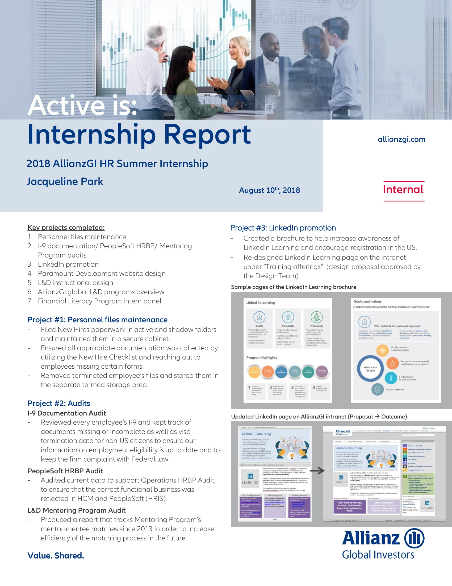
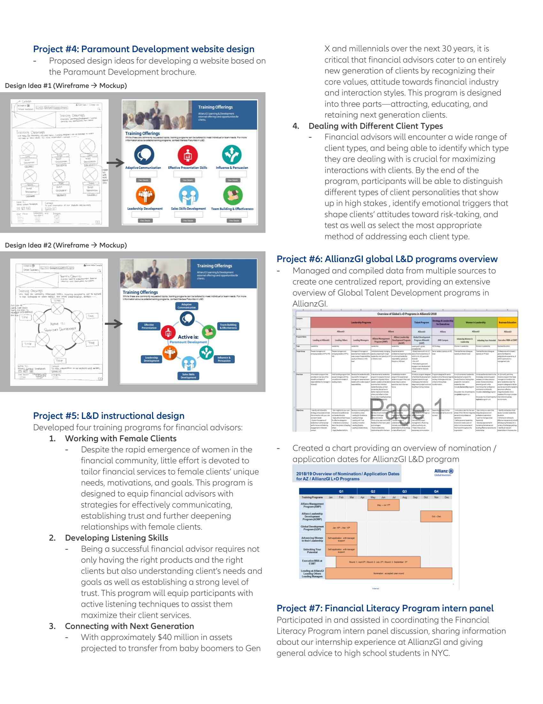
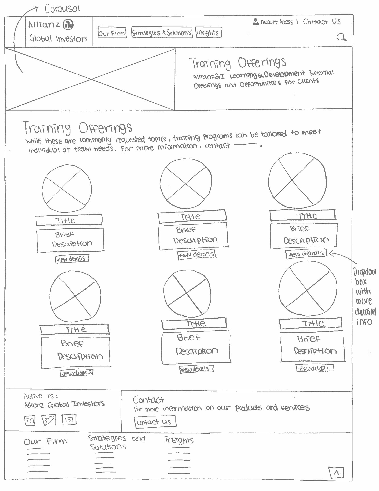
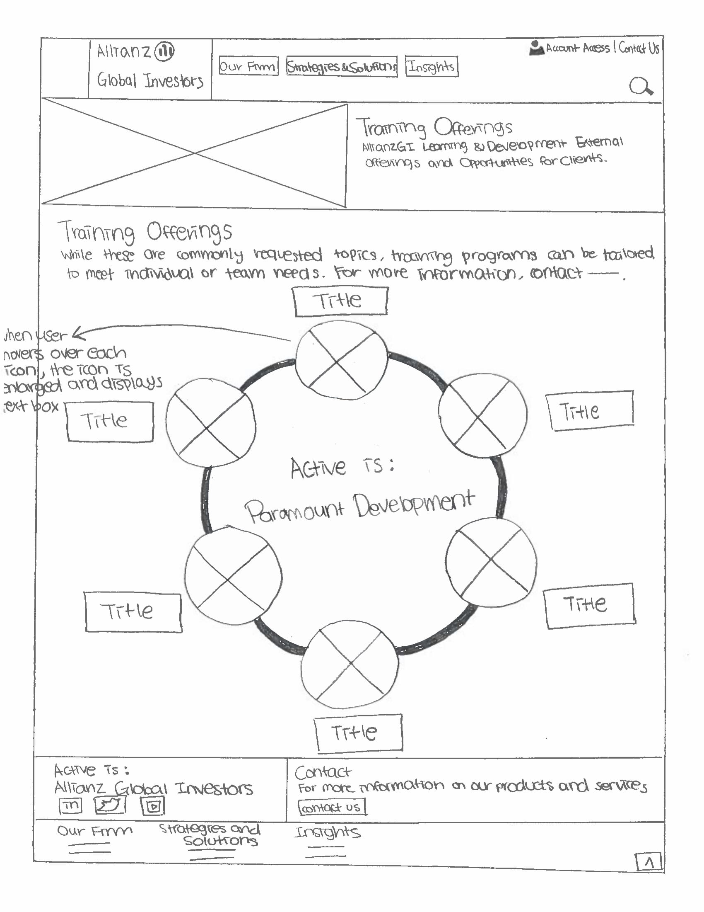
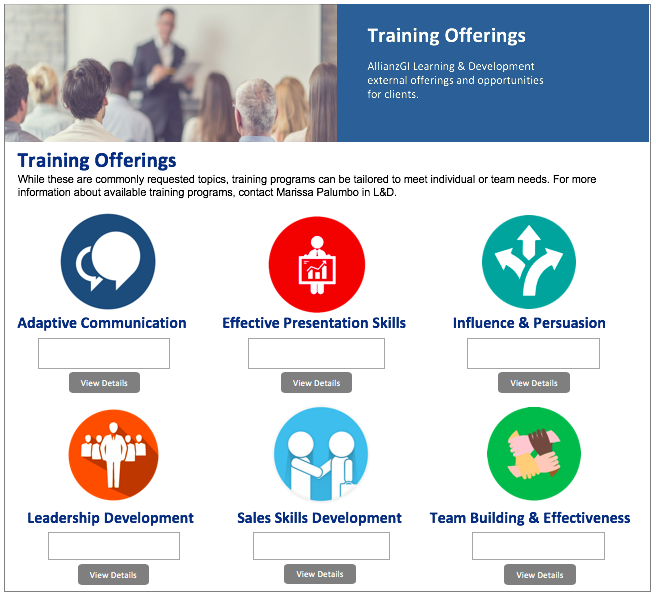
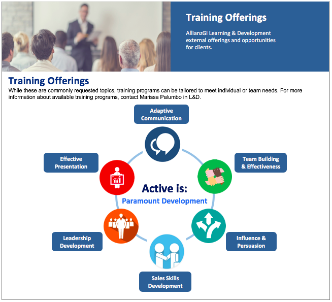

Allianz Global Investors
Learning & Development Intern
Role
As a summer intern in Learning & Development group at Allianz Global Investors, I was involved in multiple creative projects from creating training materials for in-house financial advisors to re-designing AllianzGi's intranet page and creating a LinkedIn Learning brochure that is utilized across the U.S. offices. Below is a report summarizing the various projects I was involved in throughout the internship.


The project I would like to highlight in my portfolio is designing an external client training portal.
Objective
I was asked by my supervisor if I could come up with some ideas for creating a portal that displays AllianzGI's external client training offerings. This was a particularly exciting project for me, as it was my first time designing something in a real-world setting. Though I have never had a formal training in user experience design, I imitated the steps that UX professionals go through when developing websites by reading Medium and various blog articles, trying to follow their way of "design thinking."
Process
1. Research
First, I had to research the different types of client training offerings that currently exist at AllianzGI. Then, I organized the training offerings into categories and selected the information that I thought was critical to including in the portal.
2. Wireframes
After conducting research, I brainstormed the different ways I wanted to communicate the information. Then I roughly sketched on a piece of paper the two design ideas that I had in mind.


3.Mockups
I used Powerpoint to visually display my two ideas and to better demonstrate how they will look in reality.

